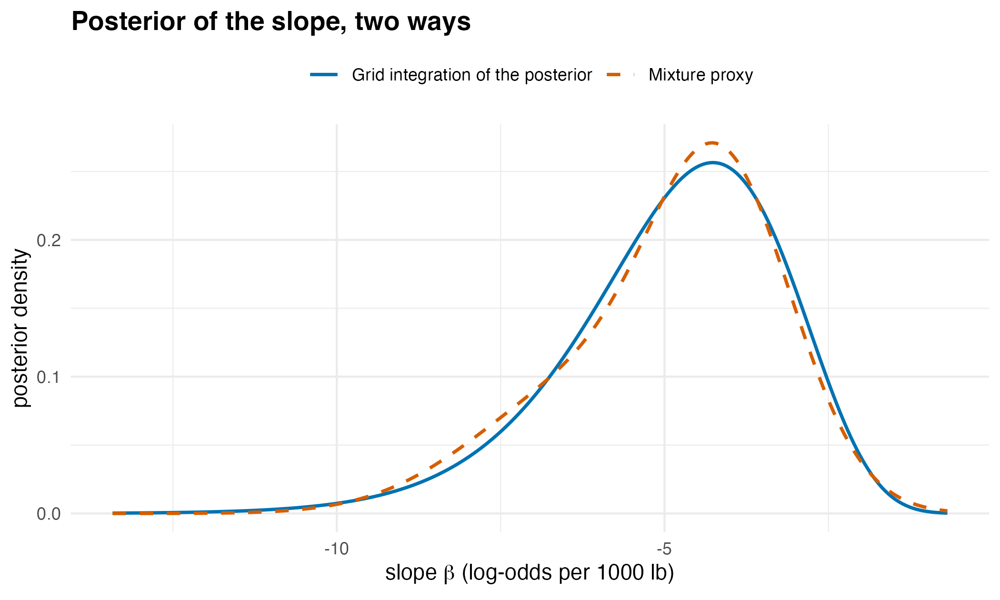

Compressing a Bayesian posterior you can evaluate but not sample
Source:vignettes/posterior_proxy.Rmd
posterior_proxy.Rmd
has_ggplot2 <- requireNamespace("ggplot2", quietly = TRUE)The problem
A Bayesian analysis starts with two ingredients. The prior states what is believed about the parameters before seeing the data. The likelihood states how probable the observed data are for each value of the parameters. The posterior distribution, which describes what is believed after seeing the data, is proportional to their product.
The constant that turns the product into a proper distribution, one that integrates to one, is usually unknown. This constant is called the normalising constant. When the prior is a proper distribution, it is also called the evidence or marginal likelihood, and it is used to compare models.
The analyst therefore has a formula that can be evaluated at any parameter value, but no way to draw from it. The usual remedy is Markov chain Monte Carlo (MCMC), which produces a long, correlated sample from the posterior. A chain must be run long enough and checked for convergence. It also gives no normalising constant without a further method.
proxymix fits a stand-in, or proxy, for the posterior: a mixture of a few normal distributions, known as a Gaussian mixture. From the proxy you can read the posterior of each parameter, probabilities, intervals and the normalising constant, with a report on how close the proxy is to the posterior.
This vignette fits a proxy to the posterior of a small logistic regression and checks it against exact numerical integration. It then compares proxymix with four established methods in a simulation.
Package capabilities
-
gmm_target()describes the distribution to approximate, called the target. You supply the number of parameters and a function that returns the log of the posterior.normalised = FALSErecords that the normalising constant is unknown. -
fit_proxymix()fits the proxy. Withregime = "kld", named after the Kullback-Leibler divergence defined below, it weights trial points drawn from a broad distribution that you set up withproposal_mvt(). Withadapt = "pmc", it replaces the broad distribution by one built from the current fit as the rounds go on. This scheme is called population Monte Carlo (Cappé et al., 2008). With it, the first broad distribution needs to be only roughly right. -
gmm_fit_quality()returns a short report on the quality of the fit, called its certificate. -
gmm_evidence()estimates the log of the normalising constant. -
gmm_marginalise(),pgmm()andqgmm()give the distribution of one parameter on its own, probabilities and quantiles. They use exact formulas for the mixture and do not evaluate the posterior again. -
gmm_fit_ensemble()andproxy_functional_ci()give an interval for any number read from the proxy. They refit the proxy to reweighted copies of the trial points already drawn, a form of bootstrap (Rubin, 1981). No new posterior evaluations are needed.
Addressing the problem
A posterior with no sampler
The built-in mtcars data record, for 32 cars, whether
the transmission is manual (am = 1) or automatic, and the
weight in thousands of pounds (wt). A logistic regression
models the log-odds of a manual transmission,
where
is its probability, as a straight line in weight, with an intercept
and a slope
.
Here the prior is flat: it gives the same weight to every value of the
parameters. The log-posterior then equals the log-likelihood up to a
constant.
set.seed(20260705)
y <- mtcars$am
w <- mtcars$wt
log_post <- function(theta) {
if (is.null(dim(theta))) theta <- matrix(theta, ncol = 2L)
eta <- outer(rep(1, length(y)), theta[, 1L]) + outer(w, theta[, 2L])
colSums(y * eta - log1p(exp(eta)))
}
tgt <- gmm_target(
n_dim = 2L,
log_density = log_post,
normalised = FALSE,
name = "logistic(am ~ wt)"
)Fit the proxy
The broad distribution is a Student-t distribution, a relative of the
normal with heavier tails. It is centred on the maximum-likelihood
estimate from glm(), with a spread three times the standard
errors in each direction. The call asks for a proxy with two components,
with 3,000 trial points (is_size), and sets a seed. The fit
works in rounds, each of which refits the mixture to the weighted trial
points.
Each time the broad distribution is replaced, the trial points change. The fitting criterion can then drop from one round to the next, and the package reports this in a warning. The handler below collects the warning and prints its first line.
mle <- stats::glm(am ~ wt, data = mtcars, family = stats::binomial())
q0 <- proposal_mvt(2L, mean = stats::coef(mle),
sigma = 9 * stats::vcov(mle), df = 5)
fit_notes <- character(0)
fit <- withCallingHandlers(
fit_proxymix(tgt, N = 2L, regime = "kld", proposal = q0,
is_size = 3000L, max_iter = 60L, seed = 1L,
adapt = "pmc"),
proxymix_nonmonotone = function(cond) {
fit_notes <<- c(fit_notes, conditionMessage(cond))
invokeRestart("muffleWarning")
}
)
cat(sub("\n.*", "", fit_notes), sep = "\n")
#> The importance-weighted EM objective decreased by 0.0716 during fitting.Check the fit before using it
The certificate shows whether a few trial points carry most of the weight. If they do, the fit rests on those few points and is unstable.
cert <- gmm_fit_quality(fit)| Check | Value |
|---|---|
| fitting method | kld |
| rounds settled before the limit | TRUE |
| weights collapsed onto a few draws | FALSE |
| effective sample size | 2427.3 |
| effective sample size as a share of all draws | 0.809 |
| smallest effective sample size of any component | 1728.4 |
| largest share of the weight held by one draw | 0.000538 |
| share of draws where the posterior could be evaluated | 1 |
The effective sample size is the number of equally weighted draws that the weighted sample is worth. The closeness of the proxy to the posterior is measured below, once the normalising constant is known.
The normalising constant
gmm_evidence() uses the fitted proxy as the broad
distribution for a fresh set of weighted draws. The average weight
estimates the normalising constant. A Laplace approximation (Tierney and
Kadane, 1986) gives a check that does not use the proxy. It replaces the
posterior by one normal distribution centred at its peak, with a spread
set by the curvature there.
ev <- gmm_evidence(fit, n = 4000L, seed = 2L)
## Laplace approximation: log f(theta_hat) + (d/2) log(2 pi)
## - (1/2) log det(-Hessian).
H <- -solve(stats::vcov(mle))
log_z_laplace <- log_post(matrix(stats::coef(mle), nrow = 1L)) +
log(2 * pi) -
0.5 * as.numeric(determinant(-H, logarithm = TRUE)$modulus)
c(proxymix = round(ev$log_z, 3), se = signif(ev$se_log_z, 2),
laplace = round(log_z_laplace, 3))
#> proxymix se laplace
#> -7.8360 0.0024 -7.9270The closeness of the proxy to the posterior is measured by the
Kullback-Leibler (KL) divergence, which is zero when the two
distributions match and grows as they differ. The package estimates it
during the fit, on a fresh set of draws. For a posterior with an unknown
normalising constant, that estimate includes the log of the constant.
Subtracting the log normalising constant from
gmm_evidence() leaves the KL divergence itself.
Read the answers off the proxy
The distribution of the slope on its own, the probability that the slope is negative, and a central 90 per cent interval for the slope all come from exact formulas for the mixture.
Check the answers against exact integration
The answers above come from the proxy, so on their own they cannot show whether the proxy is right. With only two parameters, the posterior can be integrated directly on a fine grid of values, without using the proxy. The intercept and the slope are strongly correlated, so the grid has to be wide. Subtracting the largest log-density before exponentiating keeps the numbers within range. Summing over the intercept gives the distribution of the slope.
a_grid <- seq(-2, 70, length.out = 600L) # intercept
b_grid <- seq(-21, 0, length.out = 400L) # slope
quad <- as.matrix(expand.grid(a = a_grid, b = b_grid))
log_dens <- log_post(quad)
dens <- matrix(exp(log_dens - max(log_dens)), nrow = length(a_grid))
da <- a_grid[2L] - a_grid[1L]
db <- b_grid[2L] - b_grid[1L]
log_z_grid <- log(sum(dens) * da * db) + max(log_dens)
marg_quad <- colSums(dens) * da
marg_quad <- marg_quad / (sum(marg_quad) * db)
marg_proxy <- dgmm(matrix(b_grid, ncol = 1L), slope)
cdf_quad <- cumsum(marg_quad) * db
interval_quad <- stats::approx(cdf_quad, b_grid + db / 2,
xout = c(0.05, 0.95), ties = mean)$y
curve_gap <- max(abs(marg_quad - marg_proxy))
c(log_z = round(log_z_grid, 3), lower = round(interval_quad[1L], 2),
upper = round(interval_quad[2L], 2),
gap_pct_of_peak = round(100 * curve_gap / max(marg_quad), 1))
#> log_z lower upper gap_pct_of_peak
#> -7.834 -7.950 -2.520 6.200
shown <- marg_quad > 1e-3 * max(marg_quad)
marg_df <- rbind(
data.frame(slope = b_grid[shown], density = marg_quad[shown],
source = "Grid integration of the posterior"),
data.frame(slope = b_grid[shown], density = marg_proxy[shown],
source = "Mixture proxy")
)
ggplot2::ggplot(marg_df,
ggplot2::aes(slope, density, colour = source,
linetype = source)) +
ggplot2::geom_line(linewidth = 0.8) +
ggplot2::scale_colour_manual(
name = NULL,
values = c("Grid integration of the posterior" = "#0072B2",
"Mixture proxy" = "#D55E00")
) +
ggplot2::scale_linetype_manual(
name = NULL,
values = c("Grid integration of the posterior" = "solid",
"Mixture proxy" = "dashed")
) +
ggplot2::labs(
title = "Posterior of the slope, two ways",
x = expression(paste("slope ", beta, " (log-odds per 1000 lb)")),
y = "posterior density"
) +
ggplot2::theme_minimal(base_size = 11) +
ggplot2::theme(plot.title = ggplot2::element_text(face = "bold"),
legend.position = "top")
The posterior of the slope from the proxy (orange, dashed) and from direct integration of the posterior on a grid (blue, solid). The grid curve does not use the proxy. Both curves are drawn where the grid density exceeds a thousandth of its peak.
The grid above stops at a slope of zero. A second, finer grid gives the probability that the slope is positive, far out in the tail.
a_tail <- seq(-10 + 0.01, 10, by = 0.02) # cell centres, intercept
b_tail <- seq(0.005, 3, by = 0.01) # cell centres, slope > 0
log_tail <- vapply(b_tail, function(b) log_post(cbind(a_tail, b)),
numeric(length(a_tail)))
p_positive_quad <- sum(exp(log_tail - log_z_grid)) * 0.02 * 0.01
p_positive <- pgmm(0, slope, lower.tail = FALSE)
c(grid = signif(p_positive_quad, 2), proxy = signif(p_positive, 2))
#> grid proxy
#> 8.5e-08 8.3e-05Error bars on the proxy itself
The proxy was fitted to one random set of trial points. A different set would give a slightly different proxy. The bootstrap below refits the proxy 80 times to reweighted copies of the same points and gives 90 per cent intervals for the posterior means and for the probability of a negative slope. For the probability, the package warns that the interval covers only the variation between refits.
ens <- gmm_fit_ensemble(fit, B = 80L, seed = 3L)
ci_mean <- proxy_functional_ci(ens, gmm_mean, level = 0.9)
ci_tail <- proxy_functional_ci(
ens, function(g) pgmm(0, gmm_marginalise(g, keep = 2L)), level = 0.9
)
#> Warning: The interval reflects refit variability only.
#> ! Gaussian-mixture tails can misstate probabilities below 0.001 by orders of
#> magnitude.
#> ℹ Check the value against numerical integration of the target or a
#> tail-specific method; set `tail_warn = NULL` to silence.| Quantity | Estimate | Lower 5% | Upper 95% |
|---|---|---|---|
| posterior mean of the intercept | 14.808 | 14.647 | 14.972 |
| posterior mean of the slope | -4.914 | -4.968 | -4.862 |
| probability that the slope is negative | 0.99992 | 0.99990 | 0.99995 |
Comparison with Stan, INLA, a Laplace approximation and BayesianTools
The mtcars example is one dataset with a flat prior. In
a simulation, proxymix was compared with four established methods on 50
simulated datasets of 200 observations, for a logistic regression with 2
and with 5 coefficients, the intercept included. Each coefficient had a
normal prior with mean 0 and standard deviation 10. Stan’s No-U-Turn
sampler (NUTS), an MCMC method that tunes its own step size (Carpenter
et al., 2017), was run through cmdstanr for 4,000 draws,
with bridgesampling (Gronau et al., 2020) for the
normalising constant. The Laplace approximation came from
LearnBayes (Albert, 2009). INLA (Rue et al., 2009) is a
fast approximation designed for regression models of this kind. DEzs is
an MCMC sampler in BayesianTools (Hartig et al., 2026) that
needs no derivatives (ter Braak and Vrugt, 2008). The reference for each
dataset was a NUTS run of 40,000 draws. Errors in the posterior mean and
in the ends of the 95 per cent interval are in units of the posterior
standard deviation. Smaller is better in every column.
| Method | Mean | Interval ends | Seconds | |||
|---|---|---|---|---|---|---|
| 2 | Stan NUTS | 0.015 | 0.042 | 0.0004 | 0.0016 | 1.4 |
| 2 | proxymix | 0.016 | 0.027 | 0.0003 | 0.0007 | 0.46 |
| 2 | Laplace (LearnBayes) | 0.093 | 0.158 | 0.0004 | 0.0084 | 0.00072 |
| 2 | INLA | 0.005 | 0.067 | 0.0002 | 0.0084 | 2.4 |
| 2 | BayesianTools DEzs | 0.021 | 0.049 | 0.0005 | – | 0.79 |
| 5 | Stan NUTS | 0.015 | 0.042 | 0.0013 | 0.0026 | 1.3 |
| 5 | proxymix | 0.015 | 0.028 | 0.0011 | 0.0015 | 0.67 |
| 5 | Laplace (LearnBayes) | 0.153 | 0.217 | 0.0015 | 0.0508 | 0.0017 |
| 5 | INLA | 0.006 | 0.074 | 0.0008 | 0.0509 | 2.4 |
| 5 | BayesianTools DEzs | 0.042 | 0.079 | 0.0036 | – | 0.74 |
proxymix placed the ends of the 95 per cent intervals closest to the reference, at 0.027 and 0.028 standard deviations against 0.042 and 0.042 for NUTS, the next closest. It was also closest on the log normalising constant. Each of these leads was more than 3 times the standard error of the difference, computed over the same datasets. INLA was closest on the posterior means, at 0.005 and 0.006. This is about the average error that random sampling leaves in the reference means themselves, 0.006. proxymix and NUTS had similar errors on the means, 0.016 and 0.015 at 2 coefficients. INLA was also closest on the probability that a coefficient is positive, clearly so at 5 coefficients. At 2 coefficients, its lead over proxymix was less than twice its standard error. The Laplace approximation takes the peak of the posterior as its mean and had the largest errors on the means and the interval ends. The 95 per cent bootstrap intervals of proxymix for the posterior means contained the reference mean in 0.89 of cases at 2 coefficients and in 0.94 at 5. The first is below the nominal 0.95 by more than twice the simulation standard error at the nominal level, about 0.02, counting the 100 intervals as independent.
The Laplace approximation was the fastest, at 0.00072 s per dataset with 2 coefficients, against 0.46 s for proxymix, 0.79 s for DEzs, 1.4 s for NUTS and 2.4 s for INLA. The bootstrap intervals add 1.0 to 1.6 s to proxymix, which then takes longer than NUTS. Other jobs shared the computer during the run, so the times compare methods only within one number of coefficients.
The code below runs every method on one simulated dataset with two coefficients. It is the simulation code for a single dataset, without the timing and scoring.
library(proxymix)
library(cmdstanr)
library(bridgesampling)
library(LearnBayes)
library(INLA)
library(BayesianTools)
# one simulated dataset: 200 observations, an intercept and one covariate
n <- 200L
p <- 2L
prior_sd <- 10
beta_pop <- c(0.5, 1.5, -1, 0.75, 0) # the first p entries are used
r <- 1L
set.seed(r)
X <- cbind(1, matrix(rnorm(n * (p - 1L)), n))
y <- rbinom(n, 1L, plogis(X %*% beta_pop[seq_len(p)]))
data <- list(n = n, p = p, X = X, y = y, prior_sd = prior_sd)
log_lik_one <- function(theta, data) {
eta <- data$X %*% theta
sum(data$y * eta - log1p(exp(eta)))
}
log_post_one <- function(theta, data) {
log_lik_one(theta, data) + sum(dnorm(theta, 0, data$prior_sd, log = TRUE))
}
log_post_rows <- function(theta, data) {
if (is.null(dim(theta))) theta <- matrix(theta, ncol = data$p)
apply(theta, 1L, log_post_one, data = data)
}
mle <- glm(y ~ X - 1, family = binomial())
# proxymix: fit, log normalising constant, bootstrap intervals
tgt <- gmm_target(n_dim = p,
log_density = function(theta) log_post_rows(theta, data),
normalised = FALSE)
q0 <- proposal_mvt(p, mean = coef(mle), sigma = 9 * vcov(mle), df = 5)
fit <- fit_proxymix(tgt, N = 2L, regime = "kld", proposal = q0,
is_size = 3000L, max_iter = 60L, seed = r, adapt = "pmc")
ev <- gmm_evidence(fit, n = 4000L, seed = r)
ens <- gmm_fit_ensemble(fit, B = 80L, seed = r)
ci <- proxy_functional_ci(ens, gmm_mean, level = 0.95)
# Stan NUTS: four chains of 1000 warm-up and 1000 kept draws, then bridge
# sampling on the draws for the log normalising constant
stan_file <- file.path(tempdir(), "logistic.stan")
writeLines(c(
"data {",
" int<lower=1> n;",
" int<lower=1> p;",
" matrix[n, p] X;",
" array[n] int<lower=0, upper=1> y;",
" real<lower=0> prior_sd;",
"}",
"parameters {",
" vector[p] beta;",
"}",
"model {",
" beta ~ normal(0, prior_sd);",
" y ~ bernoulli_logit(X * beta);",
"}"
), stan_file)
model <- cmdstan_model(stan_file)
fit_nuts <- model$sample(data, chains = 4L, parallel_chains = 1L,
iter_warmup = 1000L, iter_sampling = 1000L,
seed = r + 100000L, refresh = 0L,
show_messages = FALSE, show_exceptions = FALSE)
draws <- fit_nuts$draws("beta", format = "matrix")
draws <- matrix(draws, ncol = data$p, dimnames = list(NULL, colnames(draws)))
bounds <- setNames(rep(-Inf, data$p), colnames(draws))
bridge <- bridge_sampler(draws, log_posterior = log_post_one, data = data,
lb = bounds, ub = -bounds, silent = TRUE)
# Laplace approximation
lap <- laplace(log_post_one, coef(mle), data)
# INLA
df <- data.frame(y = y, X[, -1L, drop = FALSE])
names(df) <- c("y", paste0("x", seq_len(p - 1L)))
fi <- inla(reformulate(names(df)[-1L], "y"), family = "binomial",
Ntrials = 1, data = df,
control.fixed = list(prec = 1 / prior_sd^2,
prec.intercept = 1 / prior_sd^2),
num.threads = "1:1")
# BayesianTools, differential-evolution sampler DEzs
setup <- createBayesianSetup(
likelihood = function(theta) log_lik_one(theta, data),
prior = createPrior(
density = function(theta) sum(dnorm(theta, 0, prior_sd, log = TRUE)),
sampler = function(n = 1L) matrix(rnorm(n * p, 0, prior_sd), n)
)
)
set.seed(r)
bt <- runMCMC(setup, sampler = "DEzs",
settings = list(iterations = 15000L, message = FALSE))
draws_bt <- getSample(bt, start = 1000L)The code needs cmdstanr with CmdStan,
bridgesampling, LearnBayes, INLA
and BayesianTools. cmdstanr and
INLA are installed from their own repositories rather than
from CRAN. It is not run when this vignette is built. The extended
version of this article gives the full simulation and a
five-parameter example on survey data.
Interpretation
The certificate is consistent with a good fit. The rounds settled before the limit, and the weights did not collapse. The 3,000 weighted draws of the last round were worth 2427 equally weighted draws, 81 per cent of the total. The broad distribution was replaced 5 times during the fit. The KL divergence on fresh draws is 0.017, with a simulation standard error of 0.003, most of it from the estimate of the log normalising constant.
The proxy puts the log normalising constant at -7.836, with a standard error of 0.002. The grid gives -7.834, and the Laplace approximation -7.927. The proxy and the grid differ by 0.0025. The Laplace approximation is further off. It assumes that the posterior is symmetric about its peak, but the posterior mean of the slope, -4.91, lies well away from the peak at -4.02. With a flat prior this constant is the integral of the likelihood. It is not a model evidence. A flat prior over all values does not integrate to one, so its height, and with it this constant, can be set at will.
The posterior probability that the slope is negative is 99.99 per cent. Heavier cars are therefore almost certainly less likely to have a manual transmission. The proxy’s 90 per cent interval for the slope runs from -8.07 to -2.53 log-odds per 1000 lb. The grid gives -7.95 to -2.52. The upper ends agree, and the proxy’s lower end lies slightly further out. The largest gap between the two curves in the figure is 6 per cent of the peak height. On the edges of the grid, the posterior density is less than of its peak. Very little of the posterior lies outside the grid.
The tail is where the proxy is weakest. The proxy gives the slope a probability of about 1 in 12,000 of being positive. The grid gives about 1 in 12,000,000. The bootstrap interval for the probability of a negative slope does not show this error, because it covers only the variation between refits. The package’s warning is the only sign.
Limitations
A posterior that can be evaluated can always be sampled by MCMC, and a mixture can then be fitted to the draws. The direct fit is the better route when you want the compact proxy itself: reproducible from its seed, with no chain to tune, and with the normalising constant and error bars included.
The number of parameters limits the method. Weighted trial draws lose efficiency quickly beyond roughly five to ten parameters, and the effective sample size in the certificate shows when this happens. For larger posteriors, draw a sample by MCMC first and fit the mixture to the draws.
The grid check works only because this posterior has two parameters. With four or more, the grid becomes too large, and the certificate and the KL divergence on fresh draws are the checks that remain.
A mixture of normal distributions has light tails. Probabilities far in the tail, such as the probability of a positive slope above, can be wrong by orders of magnitude.
The simulation also shows where proxymix lost. INLA was closer on the posterior means and on the probability that a coefficient is positive. The bootstrap intervals of proxymix covered the reference means less often than stated at 2 coefficients. The Laplace approximation was 391 to 643 times faster than the next fastest method. The simulation covers logistic regression with standard normal covariates, 200 observations, 2 and 5 coefficients and one weak prior. It does not cover skewed or multimodal posteriors, perfectly separated data, or more than 5 parameters.
The nearest CRAN package, AdMit (Ardia et al., 2009),
fits a mixture of Student-t distributions to a posterior that can be
evaluated, for use as a sampling distribution. A Student-t mixture fits
heavy tails more naturally, but it lacks the exact formulas for marginal
and conditional distributions that a Gaussian mixture has.
Further reading
Fitting a proxy to a density you cannot sample introduces the same fitting method on a target whose shape is known in advance.
Choosing between the three fitting regimes explains why a posterior known only up to a constant needs the third fitting method.
The closed-form operator calculus on a mixture covers the exact operations on the fitted proxy, such as marginal and conditional distributions.
Reading the entropy of a fitted mixture adds measures of the spread of a fitted posterior.
References
Albert, J. (2009). Bayesian Computation with R. Second edition. Springer. https://doi.org/10.1007/978-0-387-92298-0.
Ardia, D., Hoogerheide, L. F. and van Dijk, H. K. (2009). Adaptive mixture of Student-t distributions as a flexible candidate distribution for efficient simulation: The R package AdMit. Journal of Statistical Software 29(3), 1–32. https://doi.org/10.18637/jss.v029.i03.
Cappé, O., Douc, R., Guillin, A., Marin, J.-M. and Robert, C. P. (2008). Adaptive importance sampling in general mixture classes. Statistics and Computing 18, 447–459. https://doi.org/10.1007/s11222-008-9059-x.
Carpenter, B., Gelman, A., Hoffman, M. D., Lee, D., Goodrich, B., Betancourt, M., Brubaker, M., Guo, J., Li, P. and Riddell, A. (2017). Stan: A probabilistic programming language. Journal of Statistical Software 76(1), 1–32. https://doi.org/10.18637/jss.v076.i01.
Gronau, Q. F., Singmann, H. and Wagenmakers, E.-J. (2020). bridgesampling: An R package for estimating normalizing constants. Journal of Statistical Software 92(10), 1–29. https://doi.org/10.18637/jss.v092.i10.
Hartig, F., Minunno, F. and Paul, S. (2026). BayesianTools: General-purpose MCMC and SMC samplers and tools for Bayesian statistics. R package version 0.1.9. https://doi.org/10.32614/CRAN.package.BayesianTools.
Hoek, J. van der and Elliott, R. J. (2024). Mixtures of multivariate Gaussians. Stochastic Analysis and Applications. https://doi.org/10.1080/07362994.2024.2372605.
Rubin, D. B. (1981). The Bayesian bootstrap. The Annals of Statistics 9(1), 130–134. https://doi.org/10.1214/aos/1176345338.
Rue, H., Martino, S. and Chopin, N. (2009). Approximate Bayesian inference for latent Gaussian models by using integrated nested Laplace approximations. Journal of the Royal Statistical Society: Series B 71(2), 319–392. https://doi.org/10.1111/j.1467-9868.2008.00700.x.
ter Braak, C. J. F. and Vrugt, J. A. (2008). Differential Evolution Markov Chain with snooker updater and fewer chains. Statistics and Computing 18, 435–446. https://doi.org/10.1007/s11222-008-9104-9.
Tierney, L. and Kadane, J. B. (1986). Accurate approximations for posterior moments and marginal densities. Journal of the American Statistical Association 81(393), 82–86. https://doi.org/10.1080/01621459.1986.10478240.
Reproduce
The data are fixed, and every random step has its own seed: the fit
uses seed = 1L, the normalising constant
seed = 2L and the bootstrap seed = 3L. The
grid integration is not random. The comparison is read from stored
results of a simulation run on 27 September 2026 under proxymix 0.16.0,
cmdstanr 0.9.0 with CmdStan 2.38.0, bridgesampling 1.2-1, LearnBayes
2.15.2, INLA 26.08.07 and BayesianTools 0.1.9, which took about 20
minutes.
#> R version 4.6.1 (2026-06-24)
#> Platform: aarch64-apple-darwin23
#> Running under: macOS Tahoe 26.6.2
#>
#> Matrix products: default
#> BLAS: /Library/Frameworks/R.framework/Versions/4.6/Resources/lib/libRblas.0.dylib
#> LAPACK: /Library/Frameworks/R.framework/Versions/4.6/Resources/lib/libRlapack.dylib; LAPACK version 3.12.1
#>
#> locale:
#> [1] en_AU.UTF-8/en_AU.UTF-8/en_AU.UTF-8/C/en_AU.UTF-8/en_AU.UTF-8
#>
#> time zone: Australia/Adelaide
#> tzcode source: internal
#>
#> attached base packages:
#> [1] stats graphics grDevices utils datasets methods base
#>
#> other attached packages:
#> [1] proxymix_0.16.0
#>
#> loaded via a namespace (and not attached):
#> [1] mvnfast_0.2.8 gtable_0.3.6 jsonlite_2.0.0 dplyr_1.2.1
#> [5] compiler_4.6.1 Rcpp_1.1.2 tidyselect_1.2.1 dichromat_2.0-1
#> [9] jquerylib_0.1.4 systemfonts_1.3.2 scales_1.4.0 textshaping_1.0.5
#> [13] yaml_2.3.12 fastmap_1.2.0 ggplot2_4.0.3 R6_2.6.1
#> [17] labeling_0.4.3 generics_0.1.4 knitr_1.51 htmlwidgets_1.6.4
#> [21] tibble_3.3.1 desc_1.4.3 bslib_0.12.0 pillar_1.11.1
#> [25] RColorBrewer_1.1-3 rlang_1.3.0 cachem_1.1.0 xfun_0.60
#> [29] fs_2.1.0 sass_0.4.10 S7_0.2.2 otel_0.2.0
#> [33] cli_3.6.6 pkgdown_2.2.1 withr_3.0.3 magrittr_2.0.5
#> [37] digest_0.6.39 grid_4.6.1 lifecycle_1.0.5 vctrs_0.7.3
#> [41] evaluate_1.0.5 glue_1.8.1 farver_2.1.2 ragg_1.5.2
#> [45] rmarkdown_2.32 tools_4.6.1 pkgconfig_2.0.3 htmltools_0.5.9